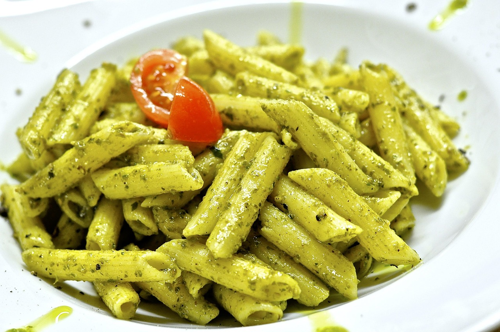
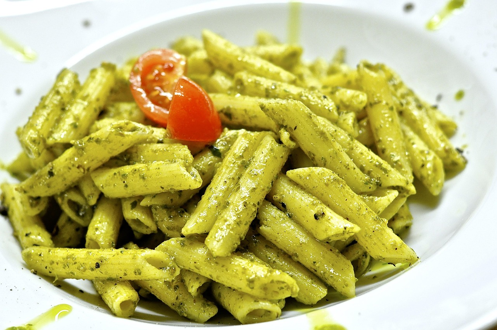

Introducción
La pasta al pesto es una receta italiana clásica, muy fácil de preparar y llena de sabor. Ideal para una comida rápida pero deliciosa.

La pasta al pesto es una receta italiana clásica, muy fácil de preparar y llena de sabor. Ideal para una comida rápida pero deliciosa.
